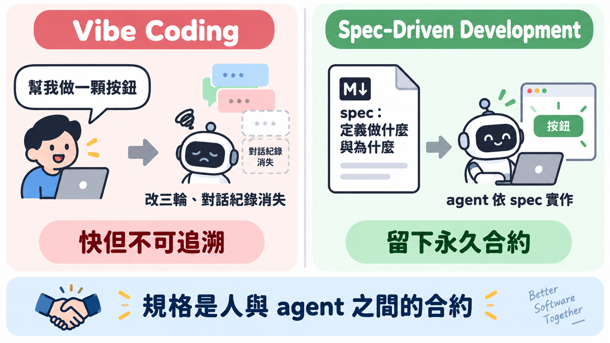
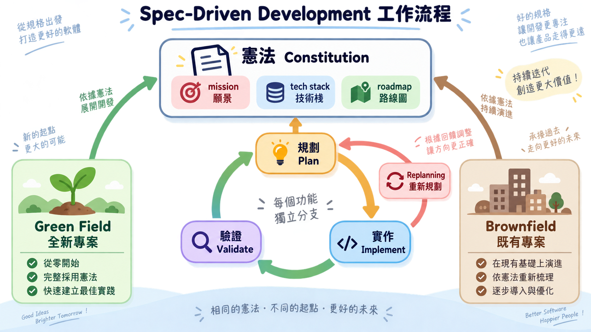
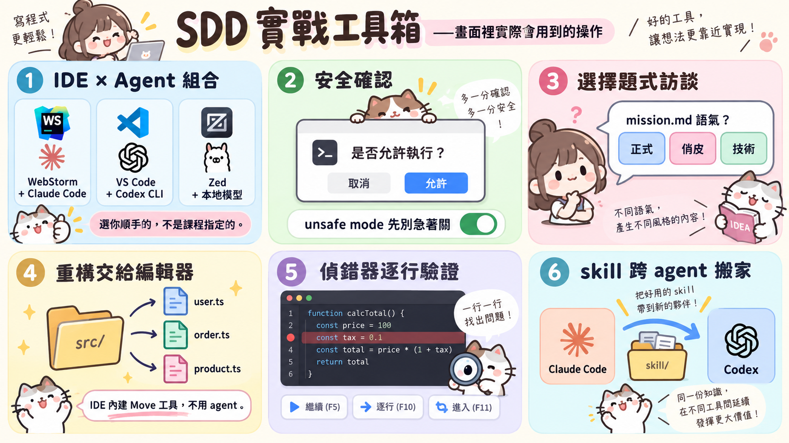
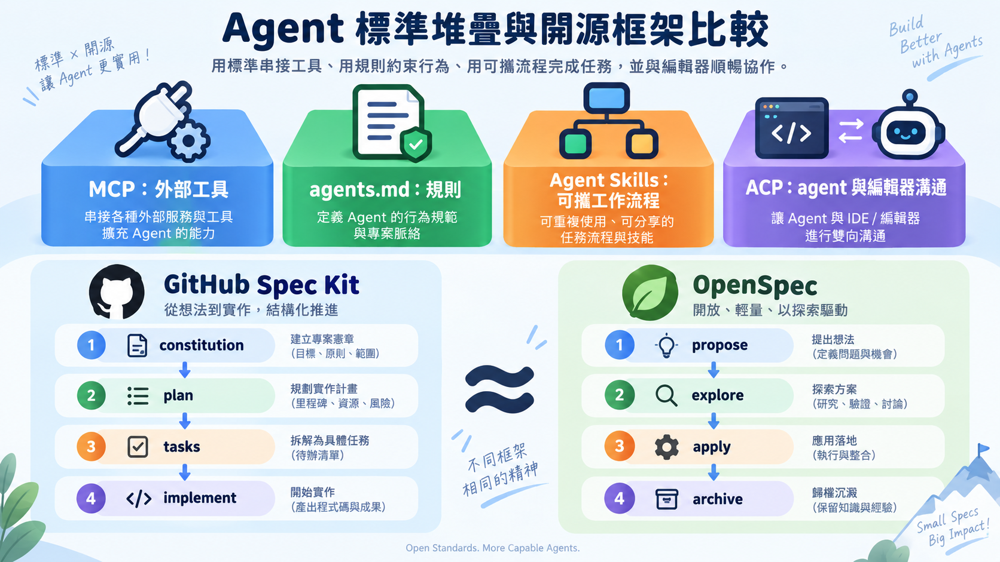

DEEP-GUIDE · SPEC-DRIVEN DEVELOPMENT
當「做一顆按鈕」不再是問題：Spec-Driven Development 深度導讀
你跟 AI 說「幫我做一顆按鈕」，它給你一顆按鈕。長得不太對，你說哪裡不對，它改。改了三輪之後你滿意了，收工——但這整段對話沒有留下任何看得見的紀錄，下一次你想改同一顆按鈕，或換一個 agent 來接手，沒有人知道當初為什麼長這樣。
這個流程對一顆按鈕來說完全夠用。但把同樣的做法套在一個要跑好幾個月的專案上，麻煩就開始了：每一次對話都是從頭來過，每一個決定都只活在某次聊天記錄裡，程式碼一直堆，「為什麼」卻一直流失。JetBrains 開發者關係工程師 Paul Everitt 在他與 DeepLearning.AI 合作開設的《Spec-Driven Development with Coding Agents》課程裡，把這個現象講得很直白：這不是 AI 不夠聰明的問題，是流程本身沒有留下合約。
關於講者：Paul Everitt 現任 JetBrains 開發者關係部門主管（Head of Developer Advocacy），主力領域是 Python 與 Web 開發。在加入 JetBrains 之前，他是 Zope Corporation 的共同創辦人，把第一套開源應用伺服器做到募得 1,400 萬美元資金的規模，也是 Python Software Foundation 與 Plone Foundation 的早期推手。更早之前，他曾是美國海軍軍官，1993 年建置了 www.navy.mil。（來源：JetBrains Guide 作者頁）
兩種失控，同一個根源
Everitt 觀察到的失控案例更具體：一個團隊做複雜產品，沒有明確規格，不同開發者各自指揮不同的 coding agent，每個 agent 都在很快地寫程式，但彼此方向互相矛盾。速度沒有問題，問題出在沒有人事先把「要往哪裡走」寫下來，讓每個 agent、每個人都對照同一份東西。
這裡藏著一個容易被忽略的技術現實：coding agent 是無狀態的。每次啟動，它的記憶都是空的，唯一能帶上路的，是你在那個當下餵給它的內容。人類團隊靠開會、靠走廊閒聊、靠「這個人記得那件事」來維持共識，agent 沒有這些管道，它能不能對齊你的意圖，完全取決於你有沒有把「非改不可的東西」寫成它一啟動就讀得到的文字。這也是為什麼「context decay」（脈絡衰退）在 agentic coding 裡是個真實的工程問題，而不只是體感——工作階段一拉長，agent 的工作記憶被塞滿，開始用猜的去補沒說清楚的地方，出錯率自然上升。
Spec 不是文件，是合約
Everitt 給的定義很清楚：spec-driven development 把「做什麼、為什麼」（what/why）跟「怎麼做」（how）拆開，前者留給人，後者交給 agent 去產生。這聽起來像是把「寫需求文件」重新包裝，但它真正的槓桿在別的地方——一句話的規格修改，可以撬動幾百行程式碼的變化。課程裡舉的例子是資料庫選型：spec 裡寫「用 SQLite 搭 Prisma」改成「換成 MongoDB」，這句話的改動幅度極小，但下游牽動的程式碼修改是巨大的。反過來想，如果你直接在程式碼層面做這個改動，成本會高上一個量級。
「懶人 prompt」（Everitt 自稱是它的擁護者）在小任務上依然合理，卻在複雜專案上會現出原形，道理是一樣的：如果你的 agent 要花二三十分鐘去寫程式碼——這可能對應到一個傳統開發者好幾個小時的工作量——那你花三四分鐘把指示寫清楚，換算下來是划算的。決定要不要寫 spec，本質上是一個投資報酬率的判斷，而不是「規矩」或「儀式感」。
Spec-driven development 的專案結構分成兩層：一份專案層級的「憲法」（constitution），定義不可變的標準；再加上一連串功能開發迴圈，每個功能各自獨立在一個分支上跑完「規劃—實作—驗證」三步。這個結構刻意讓每個功能之間留一個乾淨的斷點，減少 context 疊加造成的混亂，而且不管是全新專案（green field）還是既有的老專案（brownfield），走的是同一套流程——差別只在 brownfield 的憲法是從既有程式碼「反向推導」出來的，不是憑空寫的。

建築師與工人：責任沒有消失，只是換了位置
課程裡用的比喻很直接：把 agent 想成蓋房子的工人，你是拿著詳細施工圖的建築師。你的工作不是教工人怎麼拿榔頭，而是把工人不知道的脈絡講清楚，然後負責監工、驗收、要求返工。這個分工聽起來理所當然，但它其實在回答一個更根本的問題——當程式碼幾乎可以無限量生產，人類的稀缺價值到底在哪裡？答案不是「打字速度」，而是「判斷力」：決定要做什麼產品、技術架構怎麼取捨、什麼是可以犧牲的、什麼是不能退讓的底線。這些判斷如果沒有寫進 spec，就等於把它們交給 agent 用猜的去補，而 agent 沒有你對這個組織、這個市場的理解，猜錯的機率不會小。
憲法本身由三根支柱組成：mission（專案的願景、受眾、範圍）、tech stack（工程團隊對開發與部署技術的共同理解）、roadmap（一份分階段的活文件）。每個功能開發都遵循同一套小步快跑：先跟 agent 對話把 spec、plan、requirements、驗收條件寫成 markdown 文件，人類審閱、修正、提交；才進入實作，agent 寫完之後，人類再做一輪驗證。功能與功能之間，還有一個常被跳過但很關鍵的步驟——replanning：回頭檢視憲法要不要更新、路線圖排序對不對、流程本身有沒有可以優化的地方。

課程用「Agent Clinic」這個示範專案把整套流程走過一遍——一個讓 AI agent 來看診、治療「幻覺」「脈絡腐化」之類職業病的戲仿版 Pet Clinic，技術棧是 Next.js 加 React。這個名字本身帶著一點自嘲：專案裡不斷提醒的「context decay」「AI fatigue」，某種程度上正是 agent 自己的職業傷害。
從憲法到第一個功能：實際跑一次
概念講完了，課程實際操作起來是這樣的：
- 寫憲法：跟 agent 開一段對話，讓它一次問完 mission、tech stack、roadmap 三個面向的關鍵問題。在 Agent Clinic 案例裡，agent 會問「mission.md 要用什麼語氣」（選了 playful）、確認後端要不要用 TypeScript（工程團隊習慣，加進 tech stack）、roadmap 要多細（選了細顆粒度）。三份文件寫好後不要直接手改，先讀一輪找漏洞——例如 mission 忘了寫目標受眾——發現漏洞就回頭跟 agent 對話補上，讓 mission、tech、roadmap 三份文件保持互相一致，再 commit，讓它成為專案的活文件。
- 規劃一個功能：從 roadmap 挑出下一項，開一個新分支，用乾淨的 context 跟 agent 對話出 spec、plan、requirements、驗收條件四份文件。課程的第一個功能叫「Hello Hana」，對話裡人類做的決定包括：範圍維持原案不擴大、把 Hana 版本鎖定在特定版號、要求嚴格 TypeScript、驗收方式先用手動 curl 測試就好。文件生成後逐一審查——例如臨時加一句「要有像樣的首頁 placeholder」，就請 agent 把 spec 和 requirements 一起同步更新，不要自己手動改文件，再 commit。
- 實作：下指令前先
/clear清掉對話歷史，避免規劃階段的雜訊帶進實作。指令可以要求一次做完所有 task group，也可以分批做——牽涉資安或資料庫這類容易出錯又難回頭的地方，分批做比較保險。agent 跑的時候看 console 即時輸出，跑完看 commit 視窗裡的 diff，先做一輪初步檢視。 - 驗證：審查重點放在「這個功能有沒有做到 spec 要求的事」，不是變數命名這種細節。課程示範裡，agent 把三個子元件塞進同一個檔案，不符合慣例，於是請 agent 修正，同時更新因此受影響的 spec 與文件——避免只改程式碼、不改規格，造成兩者漂移。想做更嚴格的驗證，可以請 agent 派出多個 sub-agent 對整包變更做一輪獨立審查，抓第一輪審查漏掉的問題。
- 收尾：commit，merge 進 main。
- 重新規劃：回頭看 roadmap 的下一項是否還合理，順便補上這次過程中發現、但還沒寫進憲法的決定——例如發現測試框架的偏好一直沒講清楚，就開一個獨立的 replanning 分支去補，並要求 agent 回頭把既有的 feature spec 和已經寫好的程式碼一起更新，讓憲法跟實作對得上。
這六步不是走一次就結束，是路線圖上每一項功能都重複一輪的節奏——上一節提到的審查疲勞和 AI fatigue，指的正是這個迴圈跑久了會出現的問題。
工具箱：畫面裡實際會用到的操作
課程用的是 WebStorm 搭 Claude Code，但這只是示範組合，不是規定：VS Code 配 Codex CLI、Zed 配本地模型，走的是同一套流程，選哪一組看你原本用什麼順手，不是看課程指定什麼。以下是畫面裡真正會點到、裝到的東西：
- 安全閥留著別急著關：agent 每次要建立檔案、跑指令、commit，預設都會跳出確認，除非切到「unsafe mode」讓它一路通行。課程建議先別關，留一層人工確認。
- 憲法訪談是選擇題介面：問「mission.md 語氣要選哪一種」會直接列出選項（例如 playful／正式／技術），選完進下一題，最後按「submit answers」才統一寫成三份文件——不是打開一個空白檔案自己填。
- 重構交給編輯器，不交給 agent：發現三個子元件被塞進同一個檔案，直接用 IDE 內建的 Move 重構工具拆檔案就好——這類編輯器早就做得很好的事，不必勞煩 agent 重寫。但拆完記得叫 agent 同步更新 spec、README 裡提到的舊路徑，不然文件會跟實際檔案結構脫勾。
- 驗證要接地氣：功能做完用
package.json的 script 啟動伺服器，瀏覽器直接看畫面；寫好測試後，在 IDE 偵錯器裡逐行執行看邏輯跑過一遍，而不是只看 agent 回報「測試通過」四個字。 - 擴充能力現在有兩條路：Context7 原本是熱門的 MCP server，現在也提供 CLI 加 skill 的安裝方式，裝機時直接讓你二選一；JetBrains 的 ACP registry 則是反過來，讓 IDE 一鍵安裝、串接像 Open Code 這樣的第三方 agent，裝完就能在同一個介面裡切換使用。
- skill 可以直接搬家：把同一個 skill 資料夾從 Claude Code 的路徑複製到 Codex 對應的路徑，幾乎零改動就能跑——這是標準化帶來的實際好處，不是說說而已。

審查疲勞是真的，而且有解法
人類在這個流程裡的角色是「human in the loop」——agent 產出，人類驗證。但課程沒有迴避一個現實問題：agent 寫程式碼的速度遠遠超過人類消化程式碼的速度，審查很容易變成「AI fatigue」，一種被大量變更淹沒、不知道該從哪裡開始檢查的疲憊感。Everitt 給的解法不是「審查得更快」，而是把審查的顆粒度縮小到可以承受的範圍：功能與功能之間保持乾淨的斷點，每次只驗證一個範圍明確的變更；審查聚焦在高層次的問題（這個功能有沒有做到 spec 要求的事），而不是變數命名這種細節；發現遺漏就回頭修 spec，而不是只在程式碼裡貼 OK 繃——因為只改程式碼不改 spec，規格跟實作就開始漂移，下一次換一個 agent、換一個人接手，漂移的落差會變成隱藏的地雷。
課程裡示範過一個更進階的驗證手法：請 agent 派出多個 sub-agent 對整個專案做一輪深度審查。這麼做的用意有兩層——sub-agent 有獨立的 context 空間可以專心想清楚問題，不會佔用主 agent 已經很擁擠的工作記憶；而且第二雙眼睛，即使是 AI 的第二雙眼睛，經常抓得到第一輪沒抓到的東西。
把重複的對話變成技能
寫 spec 的過程裡有大量重複——每次開新功能，人類都在打幾乎一樣的提示詞。課程給的答案是 agent skills：把可重複的工作流程包裝成一包指令加資源，讓 agent 之後看到類似情境就知道怎麼做，不用每次重講一遍。課程裡示範寫了兩個 skill——一個自動產生 changelog（給非技術利害關係人看進度用），一個把驗證步驟（跑 lint、跑測試、更新 README）包裝成一鍵流程。這裡有意思的地方是：寫 skill 這件事本身，也是請 agent 幫你寫——多數 agent 現在都有「幫你寫 skill 的 skill」。
Everitt 也點出一個正在發生的位移：過去擴充 agent 能力的通用做法是 MCP（model context protocol），把外部工具、API、私有知識庫接進來；但現在越來越多場景改用「skill 呼叫 CLI 工具」來做同一件事，理由是設定成本更低、消耗的 context 更少。他舉的例子是 Context7——原本是熱門的 MCP server，提供套件的最新文件，現在也提供 CLI 加 skill 的替代方案，裝機時直接讓你二選一。這不代表 MCP 過時，而是工具鏈在往「更輕量的介面」收斂。
沒有人規定你只能用一套工具
課程收尾談的是「不要把整套工作流綁死在單一 agent 或 IDE 上」。這句話背後有幾個正在成形的標準：MCP 負責外部工具、agents.md 負責寫死的規則、agent skills 負責可攜的工作流程、ACP（agent client protocol）負責讓 agent 跟編輯器互相溝通——概念上跟語言伺服器協定（LSP）是同一個邏輯，讓任何遵循這個協定的 agent 都能接進任何遵循這個協定的編輯器。課程示範把同一個 skill 從 Claude Code 搬到 Codex，幾乎零改動就能跑，驗證的正是這個可攜性。
至於「該用哪一套 spec-driven 框架」，課程沒有給標準答案，而是並列了兩個開源選項讓讀者自己判斷：GitHub 的 Spec Kit，提供 constitution、plan、tasks、implement 這幾個 slash command；OpenSpec，走的是 propose、explore、apply、archive 這個循環，propose/explore 對應 Spec Kit 的 plan，apply 對應 implement，archive 對應 replanning。兩者精神一致，差別在包裝方式和有沒有內建分支管理、驗證腳本這類細節。Everitt 的建議是實際試過兩套，再回頭客製化自己的流程。這正是整堂課最後想留下的立場：spec-driven development 不是一個要你照抄的模板，而是一套「先想清楚、寫下來、讓人跟 agent 都對得上」的紀律，工具會換，這個紀律不會。

當程式碼的產出速度不再是瓶頸，真正稀缺的東西，是有人願意花那三四分鐘，把「為什麼」寫清楚。